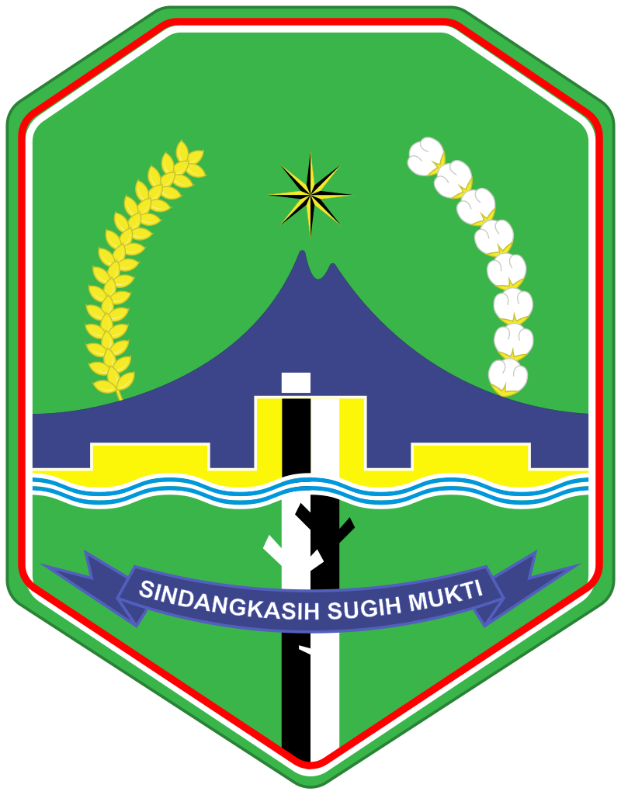

Sejarah
Kota Majalengka
Menelusuri asal usul si kota angin.
Sejarah Majalengka
Pada zaman kerajaan Hindu-Buddha sampai dengan abad ke-15, di wilayah Kabupaten Majalengka terbagi menjadi 4 kerajaan yaitu:
1. Kerajaan Talaga Manggung dipimpin oleh Sunan Corenda atau lebih dikenal dengan sebutan Sunan Parung
2. Kerajaan Rajagaluh dipimpin oleh Prabu Cakraningrat
3. Kerajaan Sindangkasih, dipimpin oleh seorang puteri bernama Nyi Rambut Kasih
4. Kerajaan Wanayasa, dipimipin oleh Prabu Wirapati
Terdapat banyak cerita rakyat tentang ke-3 kerajaan tersebut yang sampai dengan saat ini masih hidup di kalangan masyarakat Majalengka. Selain cerita rakyat yang masih diyakini juga terdapat situs, makam-makam dan benda-benda purbakala, yang kesemuanya itu selain menjadi kekayaan daerah juga dapat digunakan sebagai sumber sejarah.
Pembetukan Kabupaten Maja
Tahun 1819 dibentuk Karesidenan Cirebon yang terdiri atas Keregenaan (Kabupaten) Cirebon, Kuningan, Bengawan Wetan, Galuh (Ciamis Sekarang) dan Maja. Kabupaten Maja adalah cikal bakal Kabupaten Majalengka. Pembentukan Kabupaten Maja berdasarkan Besluit (Surat Keputusan) Komisaris Gubernur Jendral Hindia Belanda No.23 Tanggal 5 Januari 1819. Kabupaten Maja adalah gabungan dari tiga distrik yaitu. Distrik Sindangkasih, Distrik Talaga, dan Distrik Rajagaluh. Kabupaten Maja beribu kota di Kota Kecamatan Maja sekarang. Bupati pertama Kabupaten Maja adalah RT Dendranegara. Kabupaten Maja mencakup wilayah Talaga, Maja, Sindangkasih, Rajagaluh, Palimanan dan Kedondong.
Perubahan Nama Kabupaten Maja menjadi Majalengka
Tanggal 11 Februari 1840, keluar surat Staatsblad No.7 dan Besluit Gubernur Jendral Hindia Belanda No.2 yang menjelasakan perpindahan Ibu kota Kabupaten ke Wilayah Sindangkasih yang kemudian diberi nama 'Majalengka', kemudian nama Kabupaten disesuaikan dengan nama ibu kota kabupaten yang baru, dari Kabupaten Maja menjadi Kabupaten Majalengka. Pemberian nama Majalengka atau dari mana asal usul Majalengka masih menjadi misteri, Nama Majalengka menurut Legenda adalah ucapan ‘Majane Langka” dari pasukan Cirebon serta Pangeran Muhammad dan Siti Armilah ketika tidak menemukan buah Maja setelah Hutan Pohon Maja dihilangkan oleh Nyi Rambut Kasih, Ratu Kerajaan Sindangkasih. Dalam Buku Sejarah Majalengka Karya N. Kartika yang mewawancarai Budayawan Ayatrohaedi, Nama Majalengka bila diartikan dalam bahasa Jawa Kuno yaitu kata ‘Maja’ merupakan nama buah dan kata ‘Lengka’ yang berati pahit, jadi kata 'Majalengka' adalah nama lain dari kata Majapahit. Majalengka sebagai ibu kota kabupaten selanjutnya semakin dikuatkan dengan adanya Surat Staatsblad, 1887 No. 159 mengatur dan menjelaskan tentang batas-batas wilayah dari Kota Majalengka.
Galeri Sejarah
Tonton
Video Mengenai sejarah Majalengka
Video ini menyajikan mengenai asal usul Kota Majalengka, silakan tonton sampai selesai ya!
Tonton Sekarang